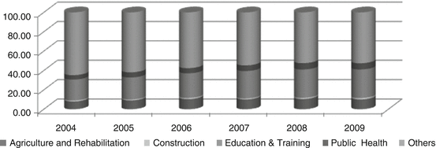

17.1 Introduction
Traditionally the Ethiopian economy has been characterized by subsistence farming that is highly dependent on rainfall and extremely vulnerable to all kinds of shocks. As a result, an overwhelming majority of the country’s people have long suffered from extreme poverty and persistent food crises. Political instability, civil conflict, and misguided economic policies, particularly between 1974 and 1991, have all contributed to the country’s low level of development.
Despite sustained growth in agricultural production over the last few years, poverty in rural areas is still severe and more pervasive than in urban areas (MoFED 2008). The combination of recurrent drought, the use of traditional agricultural practices, fluctuations in agricultural production, underdeveloped communication and road networks, and a correspondingly inefficient agricultural marketing system, make illiteracy and poor health characteristic features of rural Ethiopia. Well-being disparity among the rural population is also significant. Many households are trapped in persistent poverty and caught at the margins of cultural, social, economic, political, and environmental systems. For instance, in the current 5-year Productive Safety Net Program (PSNP) the national government intends to provide benefits to about 7.8 million people in order to help them cope with harsh economic conditions (MoFED 2010). In view of this situation, it is important to assess the policies that have been pursued by the Ethiopian government to improve the welfare of rural Ethiopians and how successful these have been at alleviating poverty.
Some of the underlying causes of living at the margins of basic needs are household specific, while others are external. Household specific problems include the lack of, or inadequacy of physical inputs (capital, labor, land, etc.), human capital (skills, innovation, and the ability to cope), and health. External causes include environmental and geographical settings, and the interrelationships among different social groups, which are characterized by natural, inherited, or acquired attributes such as religion, ethnicity, gender, or occupation.
Understanding the nature of marginality, or being highly disadvantaged in social, economic, and political terms, enables the design of more effective policy interventions and the identification of development opportunities that fit specific circumstances. To gain that understanding it is imperative to have a comprehensive overview of the policy environment and rural poverty. In this paper we used research outputs, published data, and government policy, strategy, and program documents to review the policy measures and program interventions that have been implemented to alleviate poverty in Ethiopia; the conditions of the people living at the margins of society; and in particular the general outcome of governmental interventions. The lack of disaggregated data for geographical, environmental, and demographic variables precludes a more detailed analysis of their effects.
17.2 Political and Economic Policy Environment in Ethiopia
The government that came to power in 1991 has taken a series of political and economic development measures that have had profound impacts on poverty. These measures focus largely on (a) stimulating economic growth to increase per capita income in order to reduce absolute poverty, (b) ensuring more equitable distribution of growth through broad-based growth strategies (addressing relative poverty or excessive inequality), and (c) ensuring that no section of society is left in persistent poverty without access to opportunities and resources on the basis of gender, age, ethnicity, culture, geography, or other factors that lead to marginalization. The federal government has tried to integrate the Millennium Development Goals (MDGs) with the country’s overall development strategies.
17.2.1 The Political Setting: The 1995 Constitution
The overriding objective of the 1995 constitution is to establish the legal basis for economic, political, and social freedoms for all Ethiopians.1 The constitution has fundamentally altered the political landscape of the country, including government structure, from a unitary state to a federal system encompassing various ethnic-based entities. The Federal Democratic Republic of Ethiopia now consists of nine regional states and two city administrations.2 Recently attempts have been made to decentralize authority. According to Patterson (2007), decentralization brings development closer to the community level and could make public service delivery more efficient and effective.
The Constitution of Ethiopia (FDRE 1995) guarantees human and democratic rights to all individual citizens and social groups (Article 10). All persons have equal protection without discrimination on the grounds of color, gender, language, religion, political or other opinion, property, birth or other status, race, or any other factor (Article 25). Furthermore nations and nationalities have the right to speak, write, and develop their own languages; promote their own cultures; establish the institutions that govern them; and have equitable representation in state and federal governments (Article 39).
A major obstacle to individual initiatives for growth is the lack of clearly articulated property ownership rights. Article 40 of the constitution stipulates that every citizen has the right to own private property, however, the ownership of land and all natural resources is exclusively vested in the state. Ethiopians do have the right to acquire land without payment and are protected against eviction from these properties. Pastoralists have the right to use state land for grazing and cultivation without charge, as well as the right not to be displaced from these lands.
Every citizen has the constitutional right to engage freely in any legal economic activity and pursue the livelihood of their choice anywhere within national territory, and the right to equal access to publicly funded social services (Article 41). As social groups, every nation and nationality has the right to improve living standards and to sustainable development (Article 43). The constitution also establishes that the duty of the government to all citizens is to provide equal opportunities to improve their economic condition, to promote the equitable distribution of wealth, and to provide special assistance to the most disadvantaged citizens in terms of economic and social development (Article 89).
These examples are some of the manifestations of the political good will of the government with respect to addressing sources of marginalization based on ethnicity, culture, gender, ecology, geographical location, or any other form. However, some of the rights enshrined in the constitution may not be fully considered when actually designing development policies and programs, and during their implementation and execution. Whether individual and group rights are respected in practice as per the constitution is an issue that requires empirical study.3
17.2.2 Social and Economic Policy Environment
The federal government formulated a broad-based development strategy to alleviate poverty, particularly rural poverty, known as the Agricultural Development Led Industrialization Strategy (ADLI). Based on this policy framework various economy-wide, sector-specific, and environmental or social group based development programs and plans have been drafted and implemented. The government has clearly indicated that “agriculture should be the starting point for initiating the structural transformation of the economy” (MoFED 1993).4 The ADLI is the overall economic development strategy for agricultural development.
Many argue that a global reduction in poverty in the form of a sharp rise in labor income could result from increased productivity of small-scale agriculture (Lipton 2005). The ADLI is justified on the basis that the vast majority of rural people suffer from abject poverty. According to the federal government, encouraging small-scale farmers and pastoralists to efficiently utilize relatively abundant labor and land resources is the most feasible way to both address food insecurity and ease the problems of poverty across the country in the short- to mid-term. Growth in the agricultural sector is also envisaged to create linkages to the rest of the economy through the creation of input and output markets.
Sustainable Development and Poverty Reduction Strategy Paper (SDPRP). The first comprehensive strategy for poverty reduction in Ethiopia was the SDPRP launched in 2001. The overarching goals of this strategy were to bring about faster and sustained economic growth, and to extend the benefits of that growth to the poor. The SDPRP considered nurturing small-scale agriculture to be essential for eliminating food aid dependency, reducing poverty, and boosting economic growth (MoFED 2002). The strategy primarily addressed critical challenges to small-scale agriculture through improved research and extension packages, and by expanding irrigation and training producers in agricultural technology (IMF 2006). The strategy also pursued decentralization of government and community empowerment activities (MoFED 2002).5
Plan for Accelerated and Sustained Development to End Poverty (PASDEP). The PASDEP was the second phase of SDPRP implemented between 2005–2006 and 2009–2010. PASDEP featured people-oriented development efforts to attain the MDGs by 2015 (MoFED 2006). PASDEP intended to expand education and health care services, and to continue food security, capacity building, and decentralization programs. It was also meant to improve subsistence agriculture by consolidating efforts started under the SDPRP, such as the development of agricultural input, output, and credit markets; the provision of specialized agricultural extension services; the establishment of a network of demonstration centers; the expansion of veterinary services; support for small-scale irrigation; the improvement of land tenure security; and the generation of off-farm income opportunities (MoFED 2006).
According to MoFED (2011), the PASDEP helped achieve average annual GDP growth of 11 % from 2005–2006 to 2009–2010, with a corresponding annual growth rate in per capita income of more than 8 %. Service sector growth contributed much of this growth, both in terms of the high rate of growth and in the percentage of the GDP. The agricultural sector grew by about 8 % per annum during the same period, accounting for about 5 % of the growth in per capita value-added income. Overall absolute poverty and food insecurity both declined by a margin of around 10 % during the plan period (MoFED 2010). Gross enrollment in the PASDEP increased by 94 %, health coverage rose by around 89 %, and clean water coverage by around 66 %. In general, the growth of PASDEP brought relatively fast and sustained growth with a reasonably tangible reduction in the percentage of people living below the poverty line. The period was also characterized by high levels of inflation and irregular rainfall in some parts of the country (MoFED 2011).
Growth and Transformation Plan (GTP). The GTP is the third, 5-year development plan in continuation of PASDEP that will be implemented from 2010–2011 until 2014–2015. The GTP will differ from previous programs in many contexts (MoFED 2010). Industrialization will be emphasized in addition to agriculture, and the plan intends to achieve the remaining MDGs. Improvement of the quality of education and health care services, and the expansion of health care services to include both prevention and treatment distinguish GTP from previous programs. The plan also includes efforts to empower youths and women to improve the distribution of resources and opportunities.
The GTP will continue to support agriculture as a major contributor to economic growth, albeit conferring emphasis to the industrial sector at end of the plan period. A special emphasis will be given to areas with high agricultural potential. The intention of the program is to narrow the gap between low performing farmers and highly productive farmers through a scaling-up strategy. Development agents and the extension system will be used as conduits for the transfer of knowledge and good practices for both crop and livestock production.
Building upon the PASDEP experiences, the GTP will expand joint efforts between farmers and the government on natural resource conservation, the development of underground and surface water sources, and to increase irrigation coverage. Efforts will be made to enhance the capacity of development agents and farmers, and to facilitate the transfer of technologies and working practices. The GTP will improve agricultural marketing through the involvement of farmers’ cooperatives, modern output market centers, and the private sector. In general the GTP is intended to improve the lives of the rural people and reduce inequality in all dimensions of well-being, including: consumption, education, and health. Although the program is ambitious with respect to its targets, the successful accomplishment of the program will greatly reduce well-being disparity among Ethiopians due to geographically, climatically, and culturally induced marginalization.
17.2.3 Sector-Specific Policies Addressing Poverty and Marginalization
Food Security Program (FSP). The economic situation in rural Ethiopia is diverse, due in part to a wide range of environmental conditions. In consideration of this situation the federal government has designed an agro-ecology based and environmentally specific Food Security Strategy based on three major agro-ecological zones: rainfall adequate areas, moisture stress areas, and pastoral areas. Launched in 2002, the Food Security Strategy addresses food security in four dimensions: (a) direct food production interventions, (b) a voluntary resettlement program, (c) an income diversification program, and (d) a safety net program (Workneh 2008).6 Because the majority of households in rainfall adequate areas produce sufficient food, these efforts target moisture stress and pastoral areas.
Specific strategies have been used to address circumstances in moisture stressed and pastoral areas. The main objective is to help communities in these areas withstand harsh environmental conditions and resulting food production shortages. In the later stage, the FSP was redesigned structurally into four major components: (a) the PSNP component, (b) the Household Asset Building Component, (c) the Complementary Community Investment Component, and (d) the Resettlement Component.
The Productive Safety Net Program (PSNP). The PNSP was launched in 2005 to address food security, particularly chronically food insecure households, through facilitating the build-up of household assets, voluntary resettlement, and creating access to income from non-farming activities (MoFED 2006). These activities focus on resolving communal problems such as land degradation and the lack of water or infrastructure. The program provides income through direct public assistance and food-for-work programs. The PSNP follows two approaches. One approach focuses on households with physically capable members that receive transfers in return for labor on public works, including the development of water points, the reclamation and rehabilitation of grazing areas, and resource conservation or terracing. The second approach focuses on households with members that are unable to work because of age or other reasons that receive direct support (MoFED 2006). The program targeted 262 woredas (local administrative districts) to reach around five million beneficiaries.
With respect to the program’s impacts, Gilligan et al. (2008) found tangible evidence that PSNP support payments have improved the well-being of beneficiaries based on data collected 18 months after the program became operational. Considering both the PSNP and other food security programs, beneficiaries were more likely to be food secure and to have improved their production levels and income generating capacity. These effects were due to the use of improved agricultural technologies and the performance of non-farming business activities. That study also found that participation in the program did not have crowding out effects on participation in the labor market or private transfers. Another evaluation of the PSNP performance found improved food security for 75 % of the beneficiaries in eight woredas from four regional states (Sharp et al. 2006). Approximately 62 % of the beneficiaries successfully protected their food assets from depletion and 46 % received greater access to public services.
Amdissa (2010) found that approximately 75 % of the beneficiary households reported consuming more or better quality food in 2006 relative to 2005, and that 94 % of these households attributed this change to the PSNP. This study also found nonparticipants whose well-being decreased during the same period and attributed this decline to their lack of access to the PSNP. It was found that around 60 % of beneficiary households avoided having to sell assets in order to buy sufficient food and that 33 % avoided having to use their savings to buy food. Most households (90 %) that avoided using assets or savings to purchase food attributed that ability to the PSNP. Almost half of the beneficiaries stated that they used health care facilities more in 2005–2006 than in 2004–2005. Half of the beneficiaries reported keeping their children in school rather than having to withdraw them due to cash or food shortages. Devereux and Sabates-Wheeler (2006) indicated that almost 25 % of the beneficiaries acquired additional assets or skills in 2005–2006, largely due to the PSNP. The move from purely relief assistance to a mode of assistance that encourages productive investment helps avoid dependency among target groups and consolidates social capital (Workneh 2008).
Resettlement Component. This component of the FSP resettles households that suffer from food insecurity arising from land scarcity and insufficient moisture to areas with adequate land and water availability (MoARD 2009). The program resettled approximately 170,000 households by 2006 (World Bank 2006), and between 188,874 (World Bank 2009) and 205,000 households by 2009 (MoARD 2009). Resettled households were provided a package of incentives that included being a beneficiary of the PSNP. Settlers were offered 2 ha of fertile land, simple farm tools, credit for the purchase of oxen, food rations for 1 year, basic services such as clean water, health care, and education, and the option to return to their place of origin if they were unsatisfied with their new conditions (NCFSE 2003). The program has resettled less than 50 % of the projected number of households (Tewodaj et al. 2008).
Population and Environmental Policies.
7 Traditional farming and land management methods, coupled with increased population pressure, have had destructive impacts on the environment such as deforestation and subsequent soil erosion. More than 80,000 ha are deforested every year in Ethiopia because of heavy reliance on fuel wood and clearing land for farming and grazing. In addition to high levels of degradation and deforestation, the stagnant economic conditions and high population pressure often reduce the amount of land per capita to far below the minimum required to support a family.8 According to Desalegn (2008), 87 % of land holders in the country had only 2 ha or less in 2003 and 37 % of farmers had half of a hectare or less. The severity of land scarcity varies significantly among regions. Around 62 % of farmers had only 1 ha or less in 2003 and this situation was more severe in the regional states of SNNPR and Tigray. Ethiopia and Kenya have the lowest average per capita land holding area among ten East African countries (Omamo et al. 2006). The fragmentation of land holdings continues and as a result it is not only the supplies of food, fodder, and fuel that are under threat, but also the very land resources and the livelihoods that depend upon them.
The National Environmental Policy was enacted in 1997 with the goal of preserving essential ecological processes and life support systems, maintaining biological diversity, ensuring the sustainable exploitation of natural resources, and improving public awareness about linkages and trade-offs between the environment and growth. Implementing the policy is primarily the responsibility of the Environmental Protection Authority, but there has not been a specific program designed to address these daunting environmental problems. Many of the components of rural development and food security programs undertaken through the Ministry of Agricultural and Rural Development (MoARD), such as reforestation, erosion control measures, and the protection of community natural resource assets such as woodlots and common grazing areas are expected to have positive environmental impacts (Patterson 2007).
Education Sector Policy. The current Education and Training Policy begun in 1994 and the Education Sector Development Programs (I, II, and III) articulate the primary principles of educational development in Ethiopia promoting decentralization, the participation of people and communities, the equitable distribution of educational services, and development of the diverse cultures and languages of the people. The use of the local languages as the medium of instruction at the primary education level has been the motto of the Universal Primary Education and along with the expansion of schools into rural areas. The establishment of Farmer Training Centers (FTC) and Technical Vocational and Educational Training institutions is intended to provide equitable, relevant, and problem-solving educational services to the rural poor. These policy directions are also designed to narrow the disparity in education coverage between localities and genders.
Health Sector Policy (HSP). The first HSP of the current government enacted in 1993 emphasized preventive health care (MoH 2011). The government launched a 20-year, rolling Health Sector Development Program in 1997–1998 to be implemented in phases. This program focuses largely on communicable diseases, common nutritional disorders, environmental health, hygiene, reproductive health care, immunizations, the treatment and control of basic infectious diseases like upper respiratory tract infections, the control of preventable diseases like malaria, and the control of sexually transmitted diseases, especially HIV/AIDS. The first three phases of the program have already been completed in 2002, 2005, and 2010 respectively. In all phases, poverty related diseases such as malaria and tuberculosis were given due emphasis. Other efforts to improve public health and to meet MDG targets included improving access to primary health care services, increasing awareness about common diseases and their causes, decentralizing and equitably distributing health care services, and strengthening the collaborative abilities among the government, communities, and NGOs.
Cognizant of the high interrelation between poverty and health problems, the HSP has focused on preventative medicine and the decentralization of the health care services. Accordingly, the policy puts emphasis on the prevention of the most common poverty-related diseases including malaria, tuberculosis, childhood illnesses, and HIV/AIDS. The government launched the Health Extension Program that trained and dispatched health care extension workers to provide basic services to households without access to basic sanitation, immunization, and other services. The Health Sector Development Program introduced a 4-tier health care service system. The first tier consists of primary health care units that include one health center and five health posts, local hospitals at the second tier, regional hospitals in the third tier, and a fourth tier consisting of a referral hospital at the national level.
17.2.4 Policies for Disadvantaged Areas and Social Groups
In the context of Ethiopia, many citizens live under harsh environmental conditions and in geographically peripheral areas that are less developed than the rest of the country. Women, children, orphans, the elderly, and the disabled are expected to be relatively vulnerable segments of the society in terms of having limited access to resources and social services. A number of policy measures and programs were specifically designed to address the problems facing these marginalized sections of society.
17.2.4.1 Agro-ecologically Disadvantaged Areas
Moisture Stress Areas. Despite some geographical differences, shortages and irregularities of rainfall have been some of the most critical challenges to the agricultural sector. This variability causes unpredictable changes in harvest yields, has limited economic growth, and causes many to depend on food aid for survival. Despite yield gaps between irrigated and non-irrigated land approaching 40 % between 1997 and 2000, the extension of irrigation use has been limited to approximately 2.5 % of the country’s potential coverage (MoFED 2010). In order to enhance the available water supply, the government adopted a strategy of facilitating the construction of micro- and medium-scale irrigation schemes, spring diversions, deep wells, and the construction of multi-purpose large-scale dams in both adequate rainfall and moisture stress areas (Ellis and Tassew 2005).
The government envisaged ensuring food security by reducing vulnerability to rainfall shortages using water harvesting technologies such as the construction of reservoirs, creating off-farm income generating opportunities, and the voluntary resettlement of people to more productive and less-populated areas within their regional states (FDRE 2002).
Pastoral Areas: Most of the residents of the dry lowland areas of the regional states of Afar, Somali, SNNPR, Oromiya, and some parts of Gambella depend on traditional livestock husbandry for their livelihoods. These pastoralists regularly move with their livestock in search of grazing areas and water because they live in environmentally hostile areas affected by social conflict and recurrent drought. Pastoralists typically benefit less than other citizens from development efforts because they are geographically isolated from infrastructure and facilities, and are poorly connected to urban markets. Poverty in pastoralist areas is generally worse than elsewhere in the country in terms of conventional human development indicators (MoFED 2006).
The government has demonstrated its political will to address the socio-economic problems of pastoralist areas. The social sector development programs tailored to pastoralists such as informal community-based schools, mobile outreach health care services, and improved veterinary services have been expanded. The government has established institutions at both the federal and regional levels in predominantly pastoralist states and other areas that host pastoralist populations.
A combination of strategies has been forwarded to address livelihood problems in pastoralist areas. These strategies involve activities such as providing animal health facilities to enhance the productivity and quality of livestock, breed improvement, the construction of surface water projects to improve water supplies, and improving road networks and other transportation infrastructure to create marketing networks. The encouragement of voluntary resettlement, sedentary farming along river basins, large-scale ranching, and similar activities have all been included in the FSP to redress the vulnerability of pastoralists (FDRE 2002).
A 15-year Pastoralist Community Development Project (PCDP) was launched in 2003. Local communities and the federal government contribute 14 % of the project budget, and the remaining 86 % has been financed by donors. Largely community-driven, the first phase of the PCDP from 2003 to 2008 was implemented in 30 pastoralist woredas in the regional states of Somali, Afar, Oromiya, and SNNPR. These efforts focused on community-level micro-projects to improve livelihoods. The second project phase (PCDP II), which was launched in March 2008 and operates until 2013, intends to enable pastoralists to better withstand external shocks and to improve their livelihoods. The PCDP II empowers local communities by involving them in decision making on developmental issues, improves pastoralist early warning systems, and provides disaster mitigation. Micro-projects focus largely on water supply improvement, expanding micro-scale irrigation, providing health care and educational services, rangeland management efforts, and the creation of income generating schemes through the formation of savings and credit associations.
During the GTP period the main focus in pastoralist areas will be on water resource development both for livestock and human use through a scaling up strategy that makes use of experiences gained in other parts of the country. The GTP will also include similar efforts to those of other programs such as voluntary resettlement, the expansion of animal and human health care and educational services, improvements to the livestock marketing system including the integration of pastoralists and domestic investors, and the development of pasture land irrigation schemes.
People at the Periphery: The regional states of Afar, Benishangul-Gumuz, Gambella, and Somali are designated as disadvantaged regions because of the prevalence of pastoralist livelihoods and their location at the geographical periphery of the country. Considering the fact that these areas are relatively marginalized compared to the rest of the country, the federal government has taken affirmative measures that are appropriate for the special circumstance of these areas. The federal government uses a budget subsidy allocation formula that is adjusted on an annual basis. For instance, in the 2007 fiscal year the size of population, the level of development, and revenue collection efforts in each region were given weights of 65, 25, and 10 % respectively in corresponding funding (FDRE 2007). The federal government also supports these regions through capacity building and advisory services on policy decisions, and on the planning and implementation of programs and projects. The various investment proclamations enacted since 1996 provide special privileges to those who are willing to invest in labor intensive agricultural and related sectors in these parts of the country. This measure provides opportunities for unskilled rural residents in these areas, improves market access for their produce, and the expansion of infrastructure and facilities. The ultimate goal of these interventions is to reduce economic disparity by mitigating the geographic and environmental factors that contribute to marginality.
17.2.4.2 Policies for Vulnerable Social Groups
Vulnerable or marginalized groups often differ from one country to another due to unique historical, economic, political, and cultural situations. In most developing countries women, children, the elderly, and the disabled suffer disproportionately from hard work, disadvantages with respect to property rights, income inequality, limited access to education and health care services, limited political participation, and difficulties in other spheres of life. Because of cultural barriers and a widespread lack of knowledge of legal rights the situation is often more severe in rural communities.
Ethiopia is a signatory nation of most UN and African conventions on vulnerable social groups and is expected to incorporate these obligations into its domestic laws and regulations. The 1995 constitution, the 2002 revised family law, the National Women Policy, and the National Youth Policy are examples of legislative efforts that were designed in conformity with the major principles of international conventions as they apply to the country’s specific circumstances. The various development programs discussed in this paper (SDPRP, PASDEP, GTP, PSNP, HSDP, etc.) also recognize the special circumstances of these vulnerable social groups. In addition to constitutional provisions that affirm the equality of all persons and the need to protect their rights from any unlawful circumstances, the federal government has attempted to mainstream the concerns of the different social groups into the different policies and programs.
Gender-Related Policies: Women are more likely to suffer from physical abuse, including rape and early marriage, in addition to being subject to hard work and problems associated with access to resources and property rights in many parts of the country. One persistent cultural problem imposed upon Ethiopian women in rural areas is forced marriage. Mainstreaming gender issues into socio-economic development plans has been the main strategy to address the concerns of women as a social group. Institutions have been put in place on the federal, sector, and local administrative (kebele) levels with different organizational structures to deal with gender issues. The Revised Family Code which begun to be implemented in 2000, protects women from forced marriages and imposed a lower age limit for marriage at 18 years of age in order to reduce health and psychological problems associated with early marriage. Article 35 of the constitution also included a clause specifically to remedy the cultural legacy of discrimination and inequality against women (FDRE 1995). This article stipulates the right of women to own property, including land, and to participate equally in policy decisions affecting the public and their personal well-being.
The National Policy for Women was launched in 1993 to combat all forms of discrimination, and to improve access and the involvement of women in all policy interventions and the activities of development institutions, programs, projects, and financial assistance of any sort (Demessie and Yitbark 2008). A concrete attempt to realize the goals of the National Policy for Women was the National Action Plan on Gender Equality, which was launched in 2001 and operated until 2006, and focused on poverty reduction, economic empowerment (including improving access to land), education, reproductive rights, women’s health, the elimination of violence against females, and institutional mechanisms for the advancement of women in decision making at all levels. The National Action Plan on Gender Equality was not integrated with the poverty reduction program SDPRP at the time (Demessie and Yitbark 2008).
Many notable women-specific programs have been initiatives of the Ethiopian Women Development Fund and the Women’s Development Initiatives Project. These programs helped women by creating gender specific income generating schemes. The Ethiopian Rehabilitation and Development Fund also invested in small-scale projects that had gender targets of a minimum of 50 % of women as beneficiaries during the late 1990s (MoFED 2002).
The massive land title registration program has enabled land ownership by female-headed households. This was a very tangible step to reduce marginality among women in terms of access to resources in rural areas. Access to land title certificates is no longer biased against the poor or females because of adequate planning, public participation, implementation, and dispute settlement mechanisms (Deininger et al. 2008).
Workneh (2008) argues that cultural and societal norms in rural areas often create considerable negative impacts on the nutritional status of women and children, making them vulnerable social groups. Attempts have been made in the various phases of the PSNP to consider the participation of women in public works and asset development efforts (MoFED 2010). Micro-finance institutions (MFIs) also support women through involvement in income generating activities.
The Health Sector Development Program and subsequent programs targeted rural households and particularly women through sanitation and disease prevention efforts for waterborne diseases, and services for reproductive health, family planning, and HIV/AIDS awareness. These efforts aimed to reduce maternal, infant, and child mortality, and the overall vulnerability of women and children. The federal government has also established affirmative action measures to improve women’s access to education (Getachew 2008). All three phases of the Education Sector Development Program imposed targets to increase the enrollment percentage of female students. In the first phase of the program the target was an increase in female enrollment from 38 to 45 % between 1997 and 2001 (Amdissa 2008).
The PASDEP also envisaged addressing gender inequality through a holistic approach. More specifically the plan tried to narrow gender disparity in education and health by improving women’s health through an extension program operated by female health workers. In addition, it initiated the necessary legislative and institutional reforms to protect the rights of women. Reducing the domestic work burden of women by improving access to potable water was also another major emphasis area (MoFED 2006).
The GTP intends to ensure women’s equal access to resources by building on previous experiences with land ownership, access to credit, the protection and promotion of reproductive rights, and abolishing harmful traditional cultural practices. The strategies to be pursued by this program include ensuring full participation in extension activities, promoting saving and credit services, and creating income generating activities. The GTP will also engage owners of very small land parcels, landless youth, and women in nonagricultural income generating activities, provide business management trainings and credit, and facilitate market access. The GTP also intends to ensure equitable access to quality primary education in order to narrow gender disparity.
Children and Orphans: Article 36 of the constitution stipulates that every child has the right to life, to the care of parents or legal guardians, and to be free from exploitative or harmful practices (FDRE 1995). The government also accords special protection to orphans by promoting opportunities for their adoption and education, and for the advancement of their welfare. The third Education Sector Program explicitly creates opportunities for disadvantaged children with special needs, or from pastoralist, semi-agricultural, and geographically isolated areas by building formal schools, alternative education centers, and building schools at the village level (Amdissa 2008).
The GTP will offer care and support to children, particularly orphans and other vulnerable children. The education strategy for children with special needs will be widely implemented along with adult literacy efforts to address socio-economic challenges within the context of communities. Ethiopia has a long cultural heritage of supporting vulnerable groups through extended family. Orphaned children are traditionally adopted by extended family members.
Disabilities: Physically handicapped or disabled people face diverse forms of discrimination. According to Handicap International/CBM (2006) the disabled often face cultural, environmental, and institutional discrimination. As a result of cultural attitudes the disabled are often feared or faced with societal biases. Physical inaccessibility and harsh working conditions, particularly in rural areas, as well as customary laws, prevent the disabled from participation in many economic and social activities.
In Ethiopia the constitution endows disabled people with equal rights and opportunities as the rest of society, except in the case of certain physical activities for which they may not be suited. Disability issues have not been explicitly dealt with in many development policies and programs (Seleshi 2010). In the PASDEP, disability was treated only in the context of gender, where it was included in the discussion on the participation of disabled women in the development process. In the GTP there is a policy direction that encourages participation of the disabled in political, economic, and social activities.
17.3 Progress in Poverty Reduction
From the material presented above it is clear that the government, the international community, and NGOs have been trying to help reduce poverty and disparity in the distribution of the benefits of economic growth across geographic areas and social groups. During the last 7 years there has been relatively tangible progress in overall economic performance and poverty alleviation efforts in the country. Unfortunately, there has not been complete and disaggregated information available to examine the extent to which these interventions have changed the welfare status of households in real terms.
17.3.1 The Poverty Situation in Ethiopia
Ethiopia is among the world’s poorest countries. In 2010 it ranked 157th among 169 countries according to the global Human Development Index (HDI) and it continues to be one of the lowest economic development performers in Sub-Saharan Africa. Ethiopia has improved its relative position by around 7.4 % between 2000 and 2010 (Table 17.1), due to its relatively higher rate of economic growth over the last 7 years (UNDP 2010). In terms of parity dollars equivalent to purchasing power in 2008, the average per capita income in Sub-Saharan Africa and the rest of the world in 2010 have been double and 11-fold that of Ethiopia respectively. Because of relatively increased coverage of social services over the last few years, the non-income HDI values such as life expectancy at birth, maternal mortality, education, and others show a relatively better picture than the income HDI.
Table 17.1
Development indicators from Ethiopia, the region, and the world
Indicators | Year | Ethiopia | Sub-Saharan Africa | World | Sub-Saharan Africa/Ethiopia | World/Ethiopia |
|---|---|---|---|---|---|---|
Human development index | 2000 | 0.25 | 0.315 | 0.570 | 1.26 | 2.28 |
2005 | 0.287 | 0.366 | 0.598 | 1.28 | 2.08 | |
2010 | 0.324 | 0.389 | 0.624 | 1.20 | 1.93 | |
Inequality adjusted HDI | 2010 | 0.216 | 0.261 | 0.489 | 1.21 | 2.26 |
GNI per capita (PPP-2008$) | 2010 | 992 | 2,050 | 10,631 | 2.07 | 10.7 |
Non-income HDI value | 2010 | 0.357 | 0.436 | 0.663 | 1.22 | 1.86 |
Life expectancy at birth | 2010 | 56.1 | 52.7 | 69.3 | 0.94 | 1.24 |
Maternal mortality ratio | 2003–2008 | 720 | 881 | 273 | 1.22 | 0.38 |
Mean years of schooling | 2010 | 8.3 | 4.5 | 7.4 | 0.54 | 0.89 |
Average measures often conceal distributional disparities among populations. Poverty is multifaceted and thus quantifying it requires using measures that reflect this multidimensionality. The Multidimensional Poverty Index (MPI) complements monetary based methods and also reveals the extent and distribution of deprivation. The MPI also captures the magnitude and degree of deprivation overlap (UNDP 2010).
About 90 % of the Ethiopian population was deprived access to two or more indicators related to education, health, and living standard between 2000 and 2008 (UNDP 2010). The scale of multidimensional deprivation was as high as 65 %. Of the three categories of human development measures, deprivation in living standards (food, clothing, housing, water, and sanitation) has been greatest. In terms of practically all MPI criteria, the situation of the Ethiopian people compares poorly to other populous countries of the region (Nigeria, Egypt, and neighboring Kenya) (Table 17.2).
Table 17.2
Multidimensional poverty among selected African countries
Country | Multi-dimensional poverty indexa (2000–2008) | Population with multidimensional poverty | % Population with at least one deprivation (2000–2008) | Gini–co-efficient | |||
|---|---|---|---|---|---|---|---|
Headcount (%) | Intensity of deprivation (%) | Education | Health | Living standards | |||
Ethiopia | 0.582 | 90 | 64.7 | 83.9 | 48.2 | 94.2 | 29.8 |
Kenya | 0.302 | 60.4 | 50.0 | 21.9 | 41.4 | 86.2 | 47.7 |
Egypt | 0.026 | 6.4 | 40.4 | 18.0 | 16.9 | 0.9 | 32.1 |
Nigeria | 0.368 | 63.5 | 57.9 | 42.4 | 59.5 | 72.1 | 42.9 |
The extent of income inequality among Ethiopians (Gini-coefficient) has not been substantial in comparison to the other three regional countries during the same period. This situation implies that deprivation and multidimensional poverty in Ethiopia are phenomena experienced by the majority, and are largely explained by the lack of economic capacity rather than skewed distribution of resources. This can largely be attributed to the excessive reliance of the majority of the people on traditional subsistence agriculture.
Ethiopia has the largest population of livestock and is the third largest contributor to agricultural production in Sub-Saharan Africa. Agriculture in Ethiopia is characterized by high labor and livestock intensity, and the use of traditional practices. Among the top five agricultural producers on the continent, it utilizes the least number of tractors and the application of chemical fertilizers is relatively modest. Overall labor productivity or output per farmer is extremely low. The average farmer in Ethiopia earns only around 13 % of the annual earnings of a farmer in Nigeria. Reliance on rainfall and low-technology methods contributes to the extreme poverty of farming households in rural Ethiopia (Table 17.3).
Table 17.3
Agricultural performance of selected Sub-Saharan African countries (Pratt and Yu 2008)
Performance indicators/country | Nigeria | Sudan | Ethiopia | Kenya | Ivory cost |
|---|---|---|---|---|---|
$US values of output share in % | 27 | 6.6 | 6.1 | 4.9 | 4.7 |
Farmers per 1,000 ha | 472 | 456 | 2,204 | 2,365 | 458 |
Tractors per 1,000 ha | 0.9 | 0.7 | 0.3 | 2.5 | 0.6 |
Livestock per 1,000 ha | 321 | 1,253 | 1,634 | 1,240 | 137 |
Fertilizer kg/ha | 5.8 | 4.5 | 13.2 | 28.3 | 13 |
Output per farmer in $US | 1,405 | 676 | 186 | 321 | 1,193 |
17.3.2 Rural and Poverty Centered Economic Performance
There has been a positive trend in the Ethiopian economy over the last few years. The GDP declined by an average of 0.3 % per annum in 2001–2002 and 2002–2003, mainly because of a drop in agricultural output of 6.2 %. In the following year agricultural output recovered and the economy showed significant growth. According to official figures annual growth in GDP has been in double digits since 2003–2004. This sustained rate of GDP growth above the rate of population growth is expected to have improved the well-being of the population. Notable growth has been exhibited by all three major sectors of the economy: agriculture, industry, and service. In the last few years agriculture has become the driver of consistent economic growth (Table 17.4).
Table 17.4
Recent Ethiopian economic indicators
Sector/year | Average 2001/2002–2002/2003 | 2003/2004 | 2004/2005 | 2005/2006 | 2006/2007 | 2007/2008 | 2008/2009 | 2009/2010 | Average 2003/2004–2009/2010 |
|---|---|---|---|---|---|---|---|---|---|
Growth rates (percentages) | |||||||||
GDP | −0.3 | 11.73 | 12.64 | 11.54 | 11.79 | 11.19 | 10.03 | 10.44 | 11.34 |
Agriculture | −6.2 | 16.97 | 13.54 | 10.92 | 9.45 | 7.49 | 6.35 | 7.63 | 10.34 |
Crop | −10.1 | 25.56 | 19.51 | 14.97 | 11.02 | 7.99 | 6.47 | 8.74 | 13.47 |
Livestock | −1.7 | 8.02 | 5.94 | 4.90 | 7.88 | 7.32 | 7.05 | 6.19 | 6.75 |
Share from GDP in % | |||||||||
Agriculture | 47 | 47.0 | 47.4 | 47.1 | 46.1 | 44.6 | 43.1 | 42.0 | 44.9 |
Crop | 29.6 | 27.6 | 29.3 | 30.2 | 30.0 | 29.2 | 28.2 | 27.8 | 28.9 |
Livestock | 15.1 | 14.3 | 13.5 | 12.7 | 12.2 | 11.8 | 11.5 | 11.0 | 12.2 |
Growth contribution to GDP | |||||||||
Agriculture | – | 68.0 | 50.8 | 44.6 | 37.0 | 29.9 | 27.3 | 30.7 | 41.0 |
The growth in value-added agriculture has come as a result of both land expansion and increased productivity. Both the amount of land under cultivation and the volume of crop production increased consistently between 2003–2004 and 2009–2010. Except for 2007–2008, the rate of production growth was higher than the rate of expansion of cultivated land for seven consecutive years, indicating growth in the yield per hectare of land over the same period (Table 17.5).
Table 17.5
Area under cultivation, production, and productivity of food grain in Ethiopia
Year | Cultivated land(millions of hectares) | Production (millions of quintals) | Yield (quintals/hectare) | Growth rate (percentages) | ||
|---|---|---|---|---|---|---|
Land | Production | Yield | ||||
2003–2004 | 8.7 | 103.6 | 11.9 | |||
2004–2005 | 9.8 | 119.1 | 12.2 | 12.6 | 15 | 2.5 |
2005–2006 | 10.2 | 133.8 | 13.1 | 4.1 | 12.3 | 7.4 |
2006–2007 | 10.5 | 155 | 14.8 | 2.9 | 15.8 | 13 |
2007–2008 | 11 | 161.2 | 14.7 | 4.8 | 4 | −0.7 |
2008–2009 | 11.2 | 171.1 | 15.3 | 1.8 | 6.1 | 4.1 |
2009–2010 | 11.5 | 180.8 | 15.7 | 2.7 | 5.7 | 2.6 |
Growth in the performance of agriculture in excess of the rate of population growth may be interpreted as a reduction in rural poverty for three reasons. First, this growth is primarily a result of improvements in the productivity of small-scale subsistence farmers, because large-scale commercial farming is not well-established in Ethiopia. Second, although this growth does not necessarily translate itself into proportional improvement in the well-being of all households, given that Gini coefficient is relatively lower in rural Ethiopia, (MoFED 2008), there is a high probability of corresponding improvement in the well-being of a large segment of the rural population. Third, according to the Lorenz curve (ECOSOC 2007), improved input supply among rural households (as a proxy for extension assistance) has been more or less balanced and thus it is likely that this growth corresponds to contributions from the majority of households.
The growth of the agricultural sector contributes to the growth of other sectors through trickledown effects that are also likely to positively influence the lives of rural people. In an economy-wide model used to analyze growth and poverty reduction linkages in Ethiopia, Diao et al. (2007) showed that broad based growth in agriculture is likely to reduce poverty in the country. Growth in agriculture induces higher overall growth than other sectors. Poverty growth elasticity is greater when additional income is driven by agriculture, which is the primary source of rural livelihoods relative to non-agricultural sectors of the economy.9
The cottage and handicraft industries sub-sector is a major source of income in rural areas after crop and livestock production, and hunting. Many rural people in both crop producing areas and pastoralist communities engage in this sub-sector either full time or as a secondary income generating activity. The value added by the small-scale cottage and handicraft sub-sector grew by about 7 % between 2003–2004 and 2009–2010. Given this overall growth, assuming that the increase in cottage and handicraft activities exceeds the rate of population growth, then it is likely that this sub-sector has also reduced poverty among the rural population that derives income from it. In addition to increased agricultural and nonagricultural activities, capital expenditures on poverty related sectors could also reduce poverty through the creation of job opportunities or other support. Rural antipoverty expenditures on agriculture, rehabilitation, construction, education, and health care have also expanded over this period (Fig. 17.1).

Fig. 17.1
Capital expenditures on “pro-poor” economic sectors in Ethiopia (Based on MoFED 2010)
Expenditures on the construction of micro-irrigation schemes and micro-dams, the development of springs, and similar efforts are expected to reduce acute water shortages during droughts. Expansion of road networks and telecommunication services ease market access, reduce transaction costs, and diversify both farm and off-farm economic activities. Easier access to markets, the expansion of microfinance, productive safety net programs, and the formation of service cooperatives reduce the need for small-scale farmers to sell product when prices are low (MoFED 2008). Improvements in market access not only help reduce price margins and transaction costs between consumers and producers in a given area, but also reduce price variations at greater market scales. The implications of the various interventions by different stakeholders, including the government and donors, and the participation of the people in the improvement of their own lives, can be broadly assessed from the welfare indicators presented in Table 17.6.
Table 17.6
Living condition indicators in Ethiopia over time
Indicators | 2004–2005 | 2009–2010 | Indicators | 2004–2005 | 2009–2010 |
|---|---|---|---|---|---|
Macroeconomy | Education | ||||
Per capita income at current prices $US | 472 | Gross primary education (1–8) coverage (percent) | 79.8 | 94.2 | |
Consumption/GDP ratio (percent) | 96.3 | 90.6 | Primary school girls to boys ratio | 0.81 | 0.93 |
Investment/GDP ratio (percent) | 21.6 | 23.7 | |||
Saving/GDP ratio (percent) | 3.7 | 9.4 | Health | ||
Foreign aid/GDP ratio (percent) | 4.0 | 3.9 | Primary health service coverage | 70 | 89 |
Poverty related government expenditure to GDP ratio (percent) | 14.2 | 12.5 | Under-five mortality rate (per 1,000) | 123 | 101 |
People below absolute poverty line (percent) | 39.0 | 29.2 | Rural potable water coverage (percent within 1.5 km) | 35 | 65.8 |
People below food poverty line (percent) | 28.2 | ||||
Households covered in the PSNP | 4,800,000 | 7,800,000 | |||
Per capita income in terms of current prices has reached US$472 in 2010 with incremental growth for the last 7 years. There has been a corresponding decrease in the percentage of people living below absolute poverty from 39 to 29 %. Savings as a share of GDP have also risen by more than double, indicating country-wide improvements in living standards. As long as agriculture continues to grow at a meaningful rate, rural poverty will be reduced by some margin. Gross primary education and health coverage have also improved significantly. Child mortality has been reduced by 22 per 1,000 within 5 years. Rural water coverage has almost doubled within the last 5 years. The World Bank (2010) indicates that around 62 and 88 % of the Ethiopian people do not have access to improved water and sanitation services respectively. These changes have already been reflected in the HDI of the UNDP (Table 17.7).
Table 17.7
Education coverage in Ethiopia, 2004–2005 to 2008–2009
Access indicators | 2004–2005 | 2008–2009 | ||||
|---|---|---|---|---|---|---|
Total | Male | Female | Total | Male | Female | |
Grade 1: net intake rate | 60.9 | 62.2 | 59.6 | 82.0 | 84.1 | 79.9 |
Net enrollment rate–primary 1–4 | 67.6 | 69.9 | 65.1 | 88.7 | 90.3 | 87.0 |
Net enrollment rate–primary 1–8 | 68.5 | 73.2 | 63.6 | 83.0 | 84.6 | 81.3 |
Gross enrollment secondary 9–10 | 27.3 | 36.6 | 21.6 | 38.1 | 43.7 | 32.4 |
Percentage of higher education enrollment | 76.0 | 24.0 | 71.5 | 28.5 | ||
Primary 1–8 students/section | 69 | 59 | ||||
Primary 1–4 (girls/boys) | 0.87 | 0.90 | ||||
Primary 5–8 (girls/boys) | 0.69 | 0.92 | ||||
Secondary 9–10 (girls/boys) | 0.57 | 0.74 | ||||
The rates of enrollment for all education levels indicate expansion in education coverage. Within a period of 4 years, this achievement has been significant. This situation reveals the possibility of achieving universal primary education (UPE) by 2015. Despite the changes in overall primary enrollment, the rates for secondary education are quite low.
Within the health sector, the number of health facilities (health centers, health posts, and hospitals) has grown more than the rate of population growth as shown in Table 17.8. As a result, the ratio of people per health facility has declined by 8 % for hospitals and 16.5 % for health centers. Consequently, health care coverage rose at an annual rate of around 13 % over the period from 2005–2006 to 2008–2009. Consistent with the health policy emphasis on preventive health measures, the number of health extension workers has increased substantially over the same period. With respect to core health professionals, although the number of health officers has increased significantly the number of physicians and nurses has declined, leading to an increase in the number of people per health care professional. Despite the expansion of physical facilities, the shortage of health care professionals likely has negative impacts on the provision of health care services.
Table 17.8
National level health care coverage in Ethiopia, 2005–2009
Health indicators | 2005–2006 | 2006–2007 | 2007–2008 | 2008–2009 | Annual growth ratea
|
|---|---|---|---|---|---|
Total population | 72,045,327 | 73,918,505 | 75,840,386 | 77,812,236 | 2.7 |
Primary health service coverage | 76.9 | 86.7 | 89.6 | 90 | 5.7 |
Number of hospitals | 138 | 143 | 149 | 195 | 13.8 |
Number of health centers | 635 | 690 | 732 | 1,362 | 38.2 |
Number of health stations and health centers | 1,206 | 1,376 | 1,517 | No data | 12.9 |
Number of health officers | 715 | 1,151 | 1,242 | 1,606 | 41.6 |
Number of nurses | 17,845 | 18,146 | 16,765 | No data | −3.09 |
Physicians | 2,155 | 1,806 | 2,085 | 2,151 | −0.1 |
Health extension workers | 9,900 | 17,653 | 24,571 | 30,950 | 70.9 |
Population per hospital | 522,068 | 516,913 | 508,996 | 399,037 | −7.9 |
Population per health center | 1134,57 | 107,128 | 103,607 | 57,131 | −16.5 |
Population per health station | 59,739 | 53,720 | 49,994 | No data | −8.2 |
Population per physician | 33,432 | 40,929 | 36,374 | 36,175 | 2.7 |
Population per nurse | 4,037 | 4,074 | 4,524 | No data | 6 |
In general the indicators presented in Table 17.8 reflect improvements in public well-being. However, there is some debate on the effects of antipoverty interventions and expenditures on poverty. Tewodaj et al. (2008) argue that not all types of antipoverty expenditures improve income levels and income-based measures of well-being. Public expenditures on agriculture do not affect productivity as substantially as would be expected. Significant effects of expenditures on agriculture have only been observed among rural households residing near urban centers. Education spending has widespread and similar effects on welfare across different regions, whereas health spending does not seem to have similar effects on welfare.
According to the World Bank (2010) around 40 % of Ethiopians still live on less than US$1.25/day (in PPP terms), implying that the intensity of poverty is still substantial. Recurrent droughts and acute food shortages continue to be distinguishing features of the country. Widespread reliance on traditional subsistence farming practices has led to the degradation of agricultural land. Ethiopia ranked second in the world after Burkina Faso in the percentage (72 %) of its people that live on degraded land (World Bank 2010). That study also found that overall life self-satisfaction among Ethiopians was rated 4.2 out of ten, indicating that approximately 58 % of the people are not satisfied with their way of life. Only 33 % of Ethiopians felt that their standard of living is normal and the majority of the population had a negative opinion of their life experience. That study also found that 20, 32, and 39 % of the population were satisfied with the quality of health care, education, and water respectively (World Bank 2010).
17.4 Growth Divergence Across Geographical Areas
17.4.1 Growth Divergence in Income
Crop Producing Farmers. The main livelihood source in the rural highland and semi-highland populations of the country is crop production. Over the last 7 years crop production has exhibited a high rate of growth, exceeding that of the livestock sector. According to official statistics the pace of crop production growth even exceeded the rate of GDP growth for three consecutive years until 2005–2006. This production growth is likely to have made some improvement in the welfare of the majority of residents in rural crop producing areas. Export crops include coffee, oilseeds, and pulse beans. Most export crops are produced by relatively well-off cash crop producers, so the growth in export crop production may not have directly improved rural poverty conditions. It is possible that conditions improved indirectly due to the boost to the overall economy from greater export crop production.
Food Insecurity in Highland and Semi-Highland Areas. Although the main source of livelihoods of people in these areas is farming, food shortages occur frequently because of the irregularity and inadequacy of rainfall. The PSNP focuses largely on these areas and has somewhat improved livelihoods in food insecure areas. There have been an estimated 7.8 million chronically food insecure beneficiaries of the government managed PSNP. This does not mean, however, that the contribution of the PSNP is sufficient to resolve the problem.
Only 18,538 households have graduated from the program in the three most populous regions states: Amhara, Oromiya, and SNNPR (Amdissa 2010). The program failed to reach approximately 70 % of the food insecure households in those regions (Sharp et al. 2006), leaving a high number of chronically food insecure households. Consecutive seasons of failed rainfall, a rapidly growing population, endemic poverty, and limited government capacity are still major causes of chronic food insecurity and water shortage in large parts of the country (USAID 2010). The federal government estimates that 4.8 million people were in need of emergency food assistance from January to June 2010, indicating that poverty and food insecurity are still very serious problems in the country.
Pastoral Areas. The number of pastoralists in Ethiopia was estimated at between 12 and 15 million people in 2004. The pastoralist populations consist of different ethnic groups and occupy 61 % of the nation’s land area. Approximately 92 % live in Somali, Afar, and Oromiya (PFE 2004), the remaining 8 % are in parts of Oromiya, the South Omo area of SNNPR, Gambella, and other regions (Assefa 2008).
Pastoralist livelihoods rely on livestock production and hunting. Economic activities in pastoral communities contribute an estimated 12 % of the GDP (Assefa 2008). Pastoral areas account for approximately 42 % of the national livestock population (PFE 2004). Pastoral areas of Ethiopia typically have harsh climatic conditions featuring erratic and low average annual rainfall, high temperatures, and ecologically fragile environments with degraded soils (PFE 2004).
Livestock production is not only important to pastoralists, it is vital to the economy of many crop farmers as well. As with crop production, the performance of this sub-sector has been greatly hampered by recurrent drought and other supply-side problems. This sub-sector has grown faster over the last 7 years than the rate of population growth, therefore poverty in pastoralist areas is expected to have fallen as well. The growth rate of value-added complements to the livestock sub-sector has been relatively lower than for crop production. It has been argued that growth in the livestock sector could also have a significant effect on economic growth, but with a relatively lesser effect on poverty alleviation because of the fact that this sub-sector engages fewer people than crop production.
Improving conditions for marginalized segments of the population has paramount social and political implications beyond mere economic importance. The PCDP is one of the mechanisms for applying interventions to address development inequality. A total of US$60 million was allocated in phase one of the PCDP for 1,804 community initiated micro-projects in 32 (25 % of the total) pastoral woredas (Assefa 2008). These interventions included contributions to income generating activities, water projects for humans and livestock, and the construction of schools, health posts, veterinary clinics, small-scale irrigation projects, and roads. The total number of beneficiaries of these interventions was estimated be one million pastoralists. These interventions indicate that there is social capital with huge development potential in terms of articulating problems, basic needs, and related solutions, and the commitment for the development of micro-projects (Assefa 2008).
Despite the various initiatives of the government, the international community, and NGOs, there are still very large imbalances, particularly between the highland and lowland parts of the country. Growth strategies and plans, including the Food Security Strategy, did not seriously consider the plight of pastoralists or draw lessons from past experiences and realities in pastoral areas (PFE 2004). Some argue that pastoralists are the most economically and politically marginalized social group in Ethiopia. In some cases pastoralist land was appropriated unlawfully and without the consent of pastoralist communities for purposes such as commercial farms and wildlife conservation areas. The absence of by-laws to apply the provisions of the constitution that protect communities from dispossession of their land is one of the manifestations of marginalization.
Despite some improvements over the years, health, education, and other services are still less available in pastoralist areas than the rest of the country. The effects of natural resource loss, recurrent drought, and the inadequacy of economic and social services, have exceeded the capacity of traditional pastoralist coping mechanisms and aggravate the problems associated with poverty (PFE 2004). Historic movements from the highlands to the lowlands, including both voluntary and involuntary government resettlement efforts to alleviate land scarcity, have increased social conflict due to competition for grazing land and water. As a result, life in the lowlands became harsher and more prone to conflict than before (Patterson 2007).
Aside from marginalization in terms of inadequate government attention, the interventions are often perceived as top-down approaches. Local and government perceptions and evaluations of risk differ significantly in the case of pastoralists in Afar (Rettberg 2010). The government considers the pastoralist way of life responsible for the pastoralist livelihood crisis in the state, whereas pastoralists blame the ignorance and policies of the government. For the pastoralists in Afar, drought, health risks, and shortages of food and water are risk factors. For instance, efforts by the government to settle pastoralists along river banks are perceived by some as a policy intended to end their traditional pastoralist lifestyle. If there is a lack of understanding of the root causes of impoverishment in pastoral areas, it may lead to policies that reinforce marginality by keeping communities in a poverty trap despite costly interventions.
17.4.2 Education and Health Coverage
Primary education enrollment increased from 2004–2005 to 2008–2009 in all regional states (Table 17.9). The rate of increase has not been uniform. Although this data includes both urban and rural areas, the rural population is relatively much larger, therefore these trends should reflect the situation in rural areas. In the relatively lagging regions of Afar, Gambella, Benishangul-Gumuz, and Somali, it is possible that enrollment has grown to compensate for a historic backlog.
Table 17.9
Primary education enrollment in Ethiopia by regional state (MoE 2010)
Regional state | Primary enrollment | Share of female to male | 2008–2009 primary enrollments (1–8) (%) | |||||
|---|---|---|---|---|---|---|---|---|
2004–2005 | 2008–2009 | Growth rate (%) | 2004–2005 | 2008–2009 | Male | Female | Total | |
Tigray | 773,026 | 1,000,626 | 6.7 | 0.49 | 0.5 | 95.6 | 98.1 | 96.9 |
Afar | 52,671 | 100,429 | 17.5 | 0.36 | 0.39 | 25.3 | 23.2 | 24.4 |
Amhara | 2,798,860 | 4,156,399 | 10.4 | 0.48 | 0.49 | 101.4 | 103.1 | 102.2 |
Oromiya | 4,561,378 | 5,570,628 | 5.1 | 0.42 | 0.46 | 80.9 | 74.8 | 77.9 |
Somali | 192,914 | 358,224 | 16.7 | 0.36 | 0.38 | 33.3 | 29.4 | 31.6 |
Benishangul–Gumuz | 131,672 | 171,170 | 6.8 | 0.4 | 0.43 | 97 | 80.1 | 88.6 |
SNNPR | 2,304,980 | 3,505,713 | 11.1 | 0.42 | 0.46 | 94.3 | 84.5 | 89.4 |
Gambella | 53,865 | 77,075 | 9.4 | 0.39 | 0.43 | 80.2 | 69.7 | 75.2 |
Harari | 26,448 | 39,932 | 10.8 | 0.43 | 0.45 | 100.2 | 83.6 | 91.9 |
Total | 11,448,641 | 15,553,142 | 8 | 0.44 | 0.47 | 84.6 | 81.3 | 83 |
The data presented in Table 17.9 clearly show that the enrollment ratio of girls to boys consistently favors boys with the exception of Tigray and Amhara. In predominantly pastoralist regional states like Afar and Somali, the enrollment rate is much lower than the national average and in other regions. The other two regional states with significant pastoralist populations (SNNPR and Oromiya) also have relatively lower enrollment rates than predominantly crop producing regional states like Tigray and Amhara. Despite the fact that Gambella and Benishangul-Gumuz are relatively undeveloped regions of the country their enrollment performance is relatively good (Table 17.10).
Table 17.10
Selected health service indicators in Ethiopia by regional state (MoH 2010)
Regional state | Immun-ization coverage (%) | Family planning coverage (%) | Access to potable water (%) | Number of nurses | Number of health officers | Total health workers (less HEW) | Health extension workers (HEW) |
|---|---|---|---|---|---|---|---|
Tigray | 77.8 | 67.8 | 80 | 2,332 | 289 | 5,339 | 1,259 |
Afar | 44.1 | 12.8 | 58 | 185 | 44 | 723 | 375 |
Amhara | 67.4 | 69.3 | 59.3 | 3,790 | 738 | 13,730 | 6,415 |
Oromiya | 64.9 | 50.6 | 57.6 | 5,040 | 826 | 21,125 | 12,875 |
Somali | 30.3 | 6.6 | 33.5 | 314 | 83 | 2,188 | 1,100 |
Benishangul-Gumuz | 53.3 | 25.6 | 51.5 | 452 | 54 | 1,170 | 499 |
SNNPR | 69.9 | 76 | 74.2 | 3,980 | 462 | 13,859 | 7,492 |
Gambella | 35.9 | 20.3 | 44.6 | 91 | 26 | 618 | 457 |
Harari | 74.4 | 35.6 | 56 | 276 | 51 | 555 | 32 |
Addis Ababa | 77.6 | 32.8 | 3,377 | 1,104 | 6,386 | 0 | |
Dire Dawa | 39.8 | 83.8 | 75.8 | 272 | 72 | 621 | 74 |
National | 65.5 | 56.2 | 61.5 | 20,109 | 3,758 | 66,314 | 30,578 |
Great regional health care service coverage disparity is evident in Ethiopia. The immunization coverage was over 70 % in Tigray, Harari, and Addis Ababa, whereas the coverage in Somali, Gambella, and Dire Dawa was less than 40 %. In family planning coverage Dire Dawa, Amhara, and Tigray rank the highest, and Afar, Somali, Gambella, and Benishangul Gumuz were the lowest because population pressure has not been a serious problem in these areas. Gambella and Benishangul-Gumuz have relatively high numbers of health professionals, Afar and Somali have the least health professionals. There is a relatively high concentration of nurses, health officers, and physicians in Tigray, Addis Ababa, Dire Dawa, and Harari. Approximately 80 % of the residents of Tigray have access to potable water. Afar, Somali, and Gambella have the lowest percentage of residents with potable water access.
17.4.3 Vulnerable Social Groups
In policy terms, various measures have been taken to address cultural discrimination against women that limits access to resources and opportunities at both the household-level and beyond. The most important achievement in terms of reducing the vulnerability of women to marginalization in rural Ethiopia is the right to own land. Land registration procedures in many regions of the country require the name of the buyer’s spouse to also be registered (Deininger et al. 2008). Widows are also given land titles. Having a registered land title increases confidence and empowers women to either invest in activities with long-term dividends (perennial crops or environmental protection activities) or rent land without fear of it being appropriated by tenant farmers.
Women’s access to education, health care, as well as donor and government co-supported extension and relief activities, has improved. For instance, between 2004–2005 and 2009–2010, the ratio of girls to boys in primary school across the country improved from 0.81:1 to 0.93:1. The workloads of women at the household-level has also been reduced because of improvements in health services (which have reduced frequency of communicable diseases affecting children and overall households), and access to potable water (reduced the amount of time spent fetching water). The expansion of MFIs and gender oriented programs by the government, and both political party affiliated and independent NGOs, have provided many opportunities for creating income generating activities.
There are criticisms of the effectiveness of gender oriented interventions. According to Demessie and Yitbark (2008), the lives of women have not changed significantly in the last few decades. Women have not benefitted much from extension services (only 9 %) because of the inability to make down payments of up to 25 % of the total input purchase. Credit services are mainly for agricultural resources linked with land and other resource endowments, and thus offer little to the marginalized poor, specifically women (Hareg Consult PLC 2005). One of the basic constitutional rights intended to support women is the right to own land. In the context of rural Ethiopia a land parcel is the most vital property a person or household may own, but women only own around 11 % of all agricultural land in the country (CSA 2006).
Despite several legal restrictions and measures enacted over the last decade, women still face widespread violations of their constitutional rights. Female students frequently confront problems such as early marriage, abduction and rape, unwanted pregnancy, heavy work-loads at home, and stigmas associated with gender parity (ADA 2011). In the area of education, enrollment growth has exceeded the rate of population growth. Both genders have been beneficiaries of this growth despite enrollment gender disparity in many of the regions. In addition to regular education, alternative basic education opportunities provide increased access to education for students above primary age (Table 17.11).
Table 17.11
Alternative rural basic education enrollment in Ethiopia by regional state: 2008–2009 (MoE 2010)
Male | Female | Total | Female/total (%) | Regional share (%) | |
|---|---|---|---|---|---|
Tigray | 2,866 | 2,592 | 5,458 | 0.47 | 0.75 |
Afar | 11,195 | 6,340 | 17,535 | 0.36 | 2.4 |
Amhara | 207,749 | 177,882 | 385,631 | 0.46 | 52.8 |
Oromiya | 103,100 | 81,397 | 184,497 | 0.44 | 25.3 |
Somali | 0 | 0 | 0 | 0 | |
Benishangul–Gumuz | 13,241 | 10,044 | 23,285 | 0.43 | 3.2 |
SNNPR | 57,402 | 48,993 | 106,395 | 0.46 | 14.6 |
Gambella | 4,147 | 2,587 | 6,734 | 0.38 | 0.9 |
Total | 400,056 | 330,223 | 730,279 | 0.45 | 100 |
The total number of beneficiaries of the Alternative Basic Education program is estimated to be around 0.7 million people, and 53 and 25.3 % of the beneficiaries are from the regional states of Amhara and Oromiya respectively. The shares of beneficiaries from other regions are extremely low. Somali in particular, has not been benefiting from this program. In all regional states, the relative proportion of female beneficiaries has been low.
Many children are deprived of their right to education because either their families cannot afford education related costs or the opportunity cost of schooling is too high (ADA 2011). Koohi-Kamali (2008) found evidence of gender bias against girls in adult consumption patterns of Ethiopian households after controlling for the effects of number and age of children. This evidence supports the case for empowering women, including enhancing their income to reduce intra-household inequality, partly through increased expenditure on goods that benefit the welfare of children.
Poverty in rural areas has the greatest effects on children. Poor farmers with small plots or degraded land, particularly from the highland parts of the country, have few options to putting their young children to work for meager income. Some are forced to migrate to urban areas to seek work so that they can help maintain their household. High population pressure, low agricultural productivity, drought, inability to afford the costs of agricultural inputs, and early marriage are some of the motivators of rural-to-urban migration (Girmachew 2009). Rural-to- urban migration arises from the intricate socio-economic problems in rural areas and often ultimately results in the marginalization of the migrants in urban areas.
Although not much is known about the extent of people living with physical disabilities in Ethiopia, its magnitude cannot be underestimated. UNICEF (2006) estimated that the disabled numbered between 5 and 7.7 million. Because of inherent discrimination and physical constraints, poverty among the disabled is expected be greater than the rest of the population. Studies of other developing counties indicate that poverty among the disabled is harsher than for other poor (UNICEF 2006). In light of the scarcity of information available, it can be assumed that the situation is not any different in Ethiopia.
The extent of poverty and its underlying causes are expected to be more apparent in the case of the disabled for several reasons. First, a disability often does not allow one to work productively in typical activities requiring physical labor, such as the traditional agricultural livelihoods in Ethiopia. Second, access to social services such as education is generally limited for the disabled in Ethiopia and more so in rural communities due to the lack of appropriate facilities, the distance between schools and villages, and limited transportation options. Some families do not send their disabled children to school because of the negative attitudes of other parents and the community (Seleshi 2010). Recently, the attitudes of parents have begun to change and the number of parents taking their disabled children to school has increased.
17.5 Conclusions
The general objective of this research effort was to assess the policies and programs of the federal government of Ethiopia, and also the interventions of other stakeholders that address rural poverty and particularly ultra-poverty and their overall effects. Civil conflict and misguided economic policies during the 1970s and 1980s, widespread reliance on rainfall dependent subsistence farming and recurrent drought have condemned a significant percentage of the Ethiopian people to extreme poverty. Since 1991 relative peace and stability have prevailed in the country. Within the general policy framework of the ADLI development strategy, various economic policy measures have been taken to mitigate poverty and the inequitable delivery of public services.
More specifically the federal government launched three consecutive medium-term development programs that feature rural development and poverty reduction as core objectives. The various rural development programs, such as the current Growth and Transformation Plan, the frequently expanded coverage of the Food Security Program, the education and health sector programs, and special policies and programs designed to address the problems of vulnerable areas and social groups, are some of the measures intended to alleviate rural poverty and inequality. In addition to the expanded government expenditures on pro-poor sectors of the economy, donor organizations such as local and international NGOs, civil society organizations, and MFIs have been offering technical and financial support for these endeavors.
Between 1991–1992 and 2002–2003 the economy improved considerably, with sustained and reasonably high growth. In particular, the agriculture sector has shown a notable rate of growth, unlike during the 1970s and 1980s. As a result, per capita income has generally increased, particularly in rural areas. As documented in reports by the federal government and international organizations such as the UNDP, there have also been relatively meaningful changes in non-income dimensions of well-being, such as access to education and health care services, and other human development parameters of the rural population.
Although the effects of increased income and the expansion of social services are expected to traverse the rural population in different regions, poverty is still severe and pervasive in rural areas (MoFED 2010). Approximately 30 % of Ethiopians live below the absolute poverty line. Through the PSNP component of the GTP, the government intends to benefit about 7.8 million people, implying that around 10 % of the country’s population requires government support to cope up with their current economic conditions (MoFED 2010). Despite consistent double-digit economic growth for over 5 years, the country still needs committed efforts to fully feed its people. Although compensating for the shortfalls accumulated over the years, some regions remain less served than others, regardless of efforts to expand social services throughout the country. Less developed and pastoralist regional states such as Afar, Somali, Benishangul-Gumuz, and Gambella still need greater improvement in the delivery of health and education services.
There have been considerable achievements by some of the efforts to improve access to economic opportunities and social services regardless of gender. Among other measures, the land policy, the family code, and the affirmative action policies in education have improved the socio-economic position of women. However, growth has not corrected gender inequality and the disparities are evident across the country. Given this overall background, there continue to be development issues to address such as regional development disparity and the persistence of severe poverty despite a relatively high rate of economic growth and significant efforts to increase the equitable distribution of economic opportunities and services.
References
ADA (2011) Annual performance report. Amhara Development Association, Amharic. http://www.amhara.org. Accessed 14 Feb 2011
Amdissa T (2006) Agriculture, growth and poverty reduction in Ethiopia: policy processes around the new PRSP (PASDEP). Paper prepared at the Future Agriculture Consortium workshop, Institute of Development Studies, Hawassa, 20–22 March 2006
Amdissa T (2008) A review of education policy, strategies and programs. In: Assefa T (ed) Digest of Ethiopia’s national policies, strategies and programs. Forum for Social Studies, Addis Ababa
Amdissa T (2010) The road for long-term social protection: the case of Amhara region productive safety net programme. In: Alemu G, Getachew D (eds) Proceedings of the first regional conference of the Amhara regional state economic development. Ethiopian Economic Association, Addis Ababa, pp 1–26
Assefa T (2008) Overview of achievements and challenges in implementing CDD projects. Pastoral communities: the case of pastoral community development project. African Development Bank, Tunis
Bijlmakers L (2003) Process and impact of the PRSP in Ethiopia. Wemos Foundation, Amsterdam
CSA (2006) Agricultural sample survey (2005–2006), vol 1, Statistical bulletin 361. Central Statistics Agency, Addis Ababa
CSA (2007) Agricultural sample survey (2007–2008), vol iv, Statistical bulletin 388. Central Statistics Agency, Addis Ababa
CSA (2008) Agricultural sample survey (2008–2009), vol iv, Statistical bulletin 417. Central Statistics Agency, Addis Ababa
Deininger K, Ali DA, Tekie A (2008) Impacts of land certification on tenure security, investment, and land markets: evidence from Ethiopia, Policy research working paper 4764. World Bank, Washington, DC
Demessie S, Yitbark T (2008) A review of national policy on Ethiopian women. In: Assefa T (ed) Digest of Ethiopia’s national policies, strategies and programs. Forum for Social Studies, Addis Ababa, pp 93–126
Desalegn R (2008) Ethiopia: agricultural policy review. In: Assefa T (ed) Digest of Ethiopia’s national policies, strategies and programs. Forum for Social Studies, Addis Ababa, pp 129–151
Devereux S, Sabates-Wheeler R (2006) Ethiopia’s productive safety net programme (PSNP): trends in PSNP transfers within targeted households. Institute of Development Studies, Addis Ababa
Diao X, Fekadu B, Haggblade S, Seyoum TA, Wamisho K, Yu B (2007) Agricultural growth linkages in Ethiopia: estimates using fixed and flexible price models, Discussion paper no 00695. International Food Policy Research Institute, Washington, DC
ECOSOC (2007) Emerging Ethiopia: strengthening efforts to eradicate poverty and hunger, including through the global partnership for development. Annual ministerial level substantive review of the Economic and Social Council, voluntary national report 2007. Economic and Social Council, Addis Ababa
Ellis F, Tassew W (2005) Ethiopia participatory poverty assessment. Ministry of Finance and Economic Development, Addis Ababa
FDRE (1995) The constitution of the Federal Democratic Republic of Ethiopia. In: Federal Negarit Gazetta. 1st year no 1, 21st August 1995, Proclamation no 1, Federal Democratic Republic of Ethiopia, Addis Abeba
FDRE (2002) Food security strategy. Federal Democratic Republic of Ethiopia, Addis Ababa
FDRE (2007) The New federal budget grant distribution formula. Federal Democratic Republic of Ethiopia, Addis Ababa
Getachew M (2008) A review of national policy of Ethiopia. In: Assefa T (ed) Digest of Ethiopia’s national policies, strategies and programs. Forum for Social Studies, Addis Ababa, pp 23–45
Gilligan DO, Hoddinott J, Seyoum AT (2008) The impact of Ethiopia’s productive safety net programme and its linkages, Discussion paper no 00839. International Food Policy Research Institute, Washington, DC
Girmachew A (2009) Church as a refuge for marginalized children in urban Ethiopia. In: Ege S, Aspen H, Berhanu T, Shiferaw B (eds) Proceedings of the 16th international conference of Ethiopian studies. Norwegian University of Science and Technology, Trondheim, pp 1025–1032
Handicap International and CBM Christoffel-Blindenmission (2006) Making PRSP inclusive. http://www.making-prsp-inclusive.org/uploads/media/Making_PRSP_Inclusive_311008_E.pdf. Accessed Nov 2009
Hareg Consult PLC (2005) Gender situation analysis in Ethiopia, Draft paper. Hareg Consult PLC, Addis Ababa
IMF (2006) The federal democratic republic of Ethiopia: poverty reduction strategy paper – 2003/04 annual progress report, IMF Country report 06/27. International Monetary Fund, Washington, DC
Koohi-Kamali F (2008) Intra-household inequality and child gender bias in Ethiopia, Policy research working paper no 4755. World Bank, Washington, DC
Lipton M (2005) Can small farms survive, prosper, or be the key channel to cut mass poverty? Paper presented at the Food and Agriculture Organization’s symposium on agricultural commercialization and the small farmer, Rome, 4–5 May 2005
MOA/FAO (1984) Ethiopian highland reclamation studies. The degradation of resources and an evaluation of action to combat it, Working paper 19. Ministry of Agriculture/Food and Agriculture Organization of the United Nations, Addis Ababa
MoARD (2009) Food security program 2010–2015. Ministry of Agricultural and Rural Development, Addis Ababa
MoE (2010) National report on the development and state of the art of adult learning and education. Ministry of Education, Addis Ababa
MoFED (1993) An economic development strategy for Ethiopia: a comprehensive guidance and a development strategy for the future. Ministry of Finances and Economic Development, Addis Ababa
MoFED (2002) Strategy paper for promoting development and poverty reduction. Ministry of Finance and Economic Development, Addis Ababa
MoFED (2006) Ethiopia: building on progress a plan for accelerated and sustained development to end poverty (PASDEP). Ministry of Finance and Economic Development, Addis Ababa
MoFED (2008) Dynamics of growth and poverty in Ethiopia (1995/96–2004/05). Ministry of Finance and Economic Development, Addis Ababa
MoFED (2010) Five years (2010/11–2014/15) growth and transformation plan, Amharic version. Ministry of Finance and Economic Development, Addis Ababa
MoFED (2011) Growth and transformation plan (GTP): 2010/11–2014/15. Ministry of Finance and Economic Development, Addis Ababa. http://et.mofcom.gov.cn/accessory/201101/1296371918402.pdf. Accessed 10 Jan 2011
MoH (2010) Health and health related indicators. Ministry of Health, Addis Ababa
MoH (2011) Health sector development program. Ministry of Health, Addis Ababa
NCFSE (2003) Food security programme, vols 1 and II. New Coalition for Food Security in Ethiopia, Addis Ababa
Omamo SW, Diao X, Wood S, Chamberlin J, You L, Benin L, Wood-Sichra U, Taywangire A (2006) Strategic priorities for agricultural development in Eastern and Central Africa, IFPRI-ASARECA research report 150. International Food Policy Research Institute, Washington, DC
Patterson KP (2007) Integrating population, health, and environment in Ethiopia. Population Reference Bureau, Washington, DC
PFE (2004) Pastoralist Forum Ethiopia strategic plan: 2004–2008. Pastoralist Forum Ethiopia, Addis Ababa
Pratt AN, Yu B (2008) An updated look at the recovery of agricultural productivity in Sub-Saharan Africa, IFPRI discussion paper no 00787. International Food Policy Research Institute, Washington, DC
Rettberg S (2010) Contested narratives of pastoral vulnerability and risk in Ethiopia’s Afar region. Practical Action Publishing, Rugby
Seleshi Z (2010) Disability and development: the need to develop disability–inclusive PASDEP in Ethiopia. Poverty Action Network, Addis Ababa
Sharp K, Brown T, Teshome A (2006) Targeting Ethiopia’s productive safety net program (PSNP). Overseas Development Institute/The IDL Group, London
Tewodaj M, Gezahegn A, Zelekawork P (2008) The bang for the birr: public expenditures and rural welfare in Ethiopia, Research report 160. International Food Policy Research Institute, Washington, DC
UNDP (2010) Human development report 2010: the real wealth of nations: pathways to human development. United Nations Development Programme, New York
UNICEF United Nations Children’s Fund (2006) UNICEF Ethiopia disability program: key child disability facts. United Nations Children’s Fund, New York
USAID (2010) Ethiopia–complex emergency, situation report 3, fiscal year (FY) 2010. United States Agency for International Development, Washington, DC
Workneh N (2008) Food security and productive safety net program in Ethiopia. In: Assefa T (ed) Digest of Ethiopia’s national policies, strategies and programs. Forum for Social Studies, Addis Ababa, pp 1–22
World Bank (2006) Productive safety net APL II project in support of the second phase of the productive safety net program, Report 37224-ET. World Bank, Washington, DC
World Bank (2009) Productive safety net APL III project in support of the third phase of the productive safety net program, Report 48633-ET. World Bank, Washington, DC
World Bank (2010) World development report 2010: development and climate change. World Bank, Washington, DC
Footnotes
1
There is no consensus with regard to some of the content of the constitution. For instance, it is unknown whether federated states based on ethnicity will ensure peoples’ freedom or lead to separation and social conflict, or whether state ownership of land provides greater freedom than private ownership.
2
Despite claims that regional states are formed based on settlement patterns, language, and cultural identity there are no strict criteria for statehood. In some cases language groups overlap and yet form a regional state [e.g., the Southern Nations, Nationalities, and People’s Region (SNNPR) includes groups that speak more than half of the languages currently spoken in Ethiopia]. Some regions with ecologically diverse areas and people of different settlement patterns form a state (e.g., Oromiya, SNNPR).
3
Some measures contradict the constitution and thus require investigation. One policy example is the Food Security Program (FSP), which facilitates resettlement as one of the ways of addressing food security through providing land to the landless or those living on degraded land who are willing to relocate. This program does not encourage movement across regions in contrast to Article 41 of the constitution (FDRE 1995). In a country-wide context, food insecure households in resource poor (land scarce) regions are relatively marginalized in terms of access to fertile soils and adequate sized parcels of land.
4
In the process of development planning, issues such as whether agriculture or industry should lead, whether a balanced or focused growth strategy should be pursued, and whether markets or the government should arbitrate economic agents have been recurring controversies that are unresolved.
5
Direct involvement of target groups is widely considered to be a precondition for successful identification of problems and for proper implementation and execution of intervention measures. Although it is claimed that the SDPRP was designed on the basis of consultation with the target groups, the contribution of the poor was little more than endorsing those policies (Amdissa 2006). Development partners, particularly NGOs, did not significantly influence the process of policy formulation (Bijlmakers 2003).
6
Ethiopia has about 140 agro-ecological zones. This diversity of conditions has an immense bearing on the formulation and implementation of specific local strategies for farming and land management (MOA/FAO 1984). For instance, because the strategies were designed based on broad ecological zones, there are pockets of chronically food insecure places within adequate rainfall zones due to different site conditions that are not considered in the broader strategy (Workneh 2008).
7
The debate on the economic effects of high population pressure has not been resolved. Given the prevailing structure of the economy and fragmentation of agricultural land, population pressure is one of the factors contributing to the level of poverty in rural Ethiopia.
8
According to Desalegn (2008), each household requires at least 2.5 ha to sustain the livelihood of its members with current technologies. It is difficult to determine the exact size of land required, however, because it depends on regional and site-specific conditions such as soil fertility and precipitation patterns, as well as household characteristics such as consumption habits and the crops or livestock produced. The scarcity of land among peasant farmers is reaching critical levels.